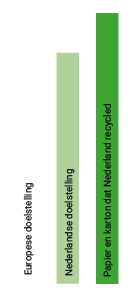

Om de 200 meter staat er langs de gracht een papierbak. Dit lijkt voldoende, maar toch ligt er vaak papier rond de papierbakken...
De gemiddelde Nederlander gebruikt 165 kilo per jaar aan papier en karton.
Dat staat gelijk aan 800 kilometer autorijden of 100 kilo CO2.
88% van het ingezamelde papier en karton wordt gerecycled. Hiermee wordt ruimschoots aan de Nederlandse doelstelling van 75% en de Europese van 60% voldaan.
Kaart met locatie van papierbakken rond Amsterdam en de Prinsengracht.
Bronnen:
Papierbakken in Amsterdam - https://data.amsterdam.nl • Papier Recycling Nederland - https://prn.nl/prn-en-het-prn-systeem/ • Alles over papier - https://papierenkarton.nl/cijfers-feiten/papier-weetjes/ • Inzameling papier en karton - https://afvalfondsverpakkingen.nl/monitoring/verpakkingsmaterialen/inzameling-papier-en-karton-een-goede-gewoonte • Huishoudelijk afval per gemeente per inwoner • https://www.cbs.nl/nl-nl/cijfers/detail